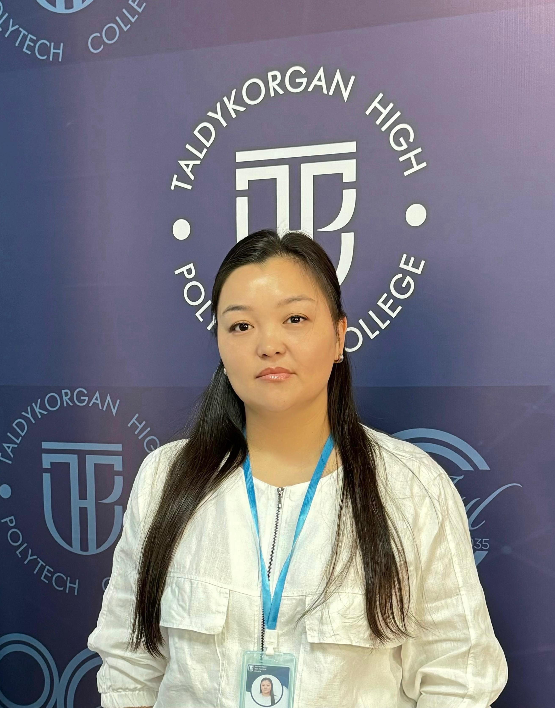

|  | Садвакасова Эльмира Далелхановна |
| Лауазымы | Арнайы пәндер оқытушысы |
|---|---|
| Бітірген оқу орны | Қ.И.Сәтпаев атындағы Қазақ ұлттық техникалық университеті |
| Диплом бойынша білімі | Жоғары, мамандығы: ЖБ-Б № 0510241, 10.06.2013ж Мамандығы: радиоэлектроника, электроника және телекоммуникациялар |
| Ғылыми дәрежесі, ғылыми атағы | |
| Біліктілігі және еңбек өтілі | Педагог-сарапшы, еңбек өтілі 11 жыл 6 ай |
| Оқытатын модульдер |
Кабель желілерін баптау және жөндеу бойынша жұмыстар кешенін орындау Электроника. Телекоммуникациялық жабдықтарға диагностика және жөндеу жұмыстарын жүргізу |
| Байланыс ақпараты | Sadvakasova.elmira.91@mail.ru |
| Қосымша ақпараттар |